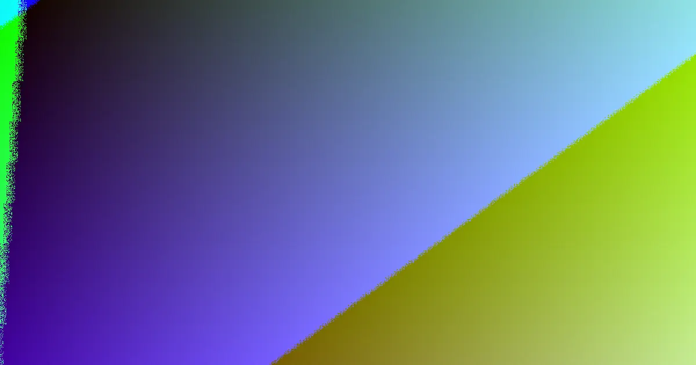

Before starting retaining walls in Perth, consider wall height, ground conditions (sandy, rocky), drainage needs, site access, and local council approvals. Costs typically range from $250-$600 per square metre, excluding GST, excavation, and drainage. Permits are generally required for walls retaining over 0.5 metres, with compliance to standards like AS 4678 crucial for engineered designs.
For local buyers, retaining walls perth before you start essential considerations before commencing any project
Retaining Walls Perth Before You Start Explained
When planning retaining walls in Perth, understanding the local ground conditions is paramount. This includes the sandy coastal plain, the Darling Scarp foothills, areas with shallow soil over rock, and sites prone to wet winter drainage. A retaining wall's fundamental purpose is to hold back soil, manage water runoff effectively, and comply with all relevant approval rules for the specific site. The choice of material should be driven by what the wall must achieve, rather than just its aesthetic appeal. A low garden terrace wall has different requirements than a long driveway wall, the edge of a building pad, or a slope where drainage and site access significantly influence the design.
Key factors to assess include:
- Height: Accurately determine the retained height, which is the vertical distance of soil the wall will hold back, not just the visible face.
- Ground Conditions: Note whether the site is predominantly sandy, rocky, sloping, or has shallow soil layers over bedrock.
- Access: Clearly communicate any site limitations such as narrow entry points, existing steps, fences, or specific excavation restrictions.
- Drainage: Understand how subsoil water will be collected and safely discharged away from the wall structure.
Choosing Materials By Fit
Limestone is frequently cited as Perth's most common retaining wall material, largely due to its local availability and suitability for the sandy Swan Coastal Plain. However, it's not a one-size-fits-all solution. For taller or longer retaining walls, concrete post-and-panel systems often provide a more robust and consistent finish. Timber sleeper walls are a popular choice for lower garden terracing where a natural aesthetic is desired and the structural demands are less intense. Besser block walls can offer a more substantial, built-up appearance once structural requirements and design are finalised. Rock or boulder walls are typically integrated into landscape-focused designs, offering a naturalistic look for terraced areas or slopes.
The conversation with a contractor should connect the proposed wall system with the retained height, site access constraints, and necessary compliance measures. For a concise overview of local wall choices before engaging with contractors, consult detailed planning guides specific to Perth retaining walls.
Check Permits Early
In Western Australia, a building permit is generally required for a retaining wall once it retains more than 0.5 metres of ground. It's important to note that even walls below this height threshold may still require approval if they are connected to other building works, affect or protect adjoining land, or are situated on a boundary line. Always confirm the specific local government requirements before commencing any work.
For engineered retaining walls, design documentation becomes a critical part of the process. Standards such as AS 4678 (Earth retaining structures) and the Certificate of Design Compliance, BA3, process are essential considerations. Clarify with your contractor who is responsible for obtaining drawings, engineering input, lodging permit applications, arranging inspections, and managing any council-requested changes. Inquire whether the quote includes permit-related documentation or is solely for construction. Understand the process if council requests design modifications and whether the wall impacts a neighbour's land, fence line, or existing building work. Maintaining written records of the agreed scope and any exclusions is highly advisable.
Read The Quote Closely
The published guide provides a broad installed cost indication of roughly $250-$600 per square metre of wall face. However, these figures typically exclude GST, excavation, drainage, and allowances for difficult site access. A low headline rate may not reflect the total project cost.
A comprehensive quote should clearly separate the cost of the visible wall structure from essential support tasks. These can include excavation, spoil removal, drainage system installation, engineering fees, permit acquisition, and site reinstatement. When comparing quotes for retaining wall supply and installation, ensure you are comparing like with like. Pay close attention to the specified wall type, the approximate wall face area, assumptions made about site access, the drainage allowance, and who holds responsibility for approval processes. If the project scope is uncertain, ask what additional information is needed to convert an estimate into a fixed-price written quote.
- Assess Your Needs. Determine the primary function of the wall: garden edging, slope stabilisation, building foundation support, or boundary definition.
- Measure Retained Height. Record the vertical distance of soil the wall will hold back. This is a key factor for permit requirements.
- Document Site Conditions. Photograph and note ground type (sandy, rocky), access limitations, and existing drainage or boundary issues.
- Understand Permit Requirements. Contact your local council to confirm permit needs, especially for walls retaining over 0.5 metres.
- Gather Contractor Quotes. Obtain detailed quotes that clearly outline costs for materials, labour, excavation, drainage, and permits.
Common questions
What is the typical cost for retaining walls in Perth? Indicative installed costs generally range from $250 to $600 per square metre of wall face. However, this often excludes GST, excavation, drainage, and allowances for difficult site access, so the final price can vary significantly.
When do I need a permit for a retaining wall in Perth? In Western Australia, a permit is generally required for retaining walls that hold back more than 0.5 metres of ground. Approval may also be needed if the wall is connected to other building works, affects neighbouring properties, or is on a boundary line.
Is limestone the best material for retaining walls in Perth? Limestone is a popular and suitable material for many Perth retaining walls, especially on the sandy coastal plain. However, the best material depends on factors like wall height, ground conditions, budget, and structural requirements. Concrete post-and-panel, timber sleeper, and besser block walls are also common options.
Retaining walls in Perth, Western Australia